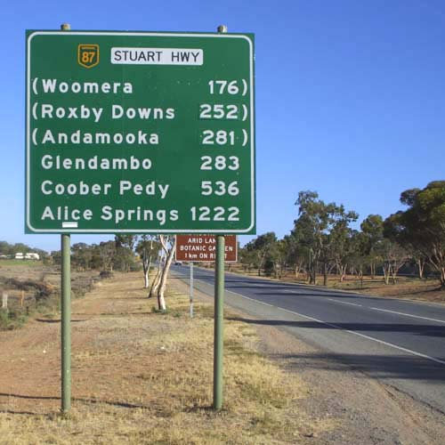
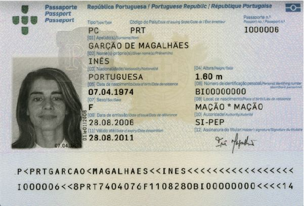

Find Text Regions
This example demonstrates how to find regions containing texts in images. It can be used for:The algorithm provided by Marvin just search for regions with an specific frequency of constrast variation in the horizontal axis. Horizontal lines segments with such pattern are grouped and the text region is determined. In some cases, false positive regions are detected, but a further step can be used to remove it based on its characteristics.
Live Demo:

